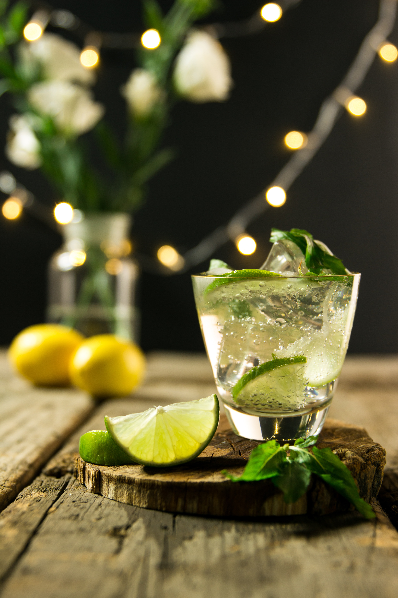

Classic Mojito

Minty Mojito
This is an authentic recipe for mojito. It's a very refreshing drink for hot summer days. Be careful when drinking it, however. If you make a pitcher you might be tempted to drink the whole thing yourself, and you just might find yourself talking Spanish in no time!
Ingredients
- 10 fresh mint leaves
- ½ medium lime, cut into 3 wedges, divided
- L2 tablespoons white sugar, or to taste
- 1 cup ice cubes, or as needed
- 1½ fluid ounces white rum
- ½ cup club soda, or as needed
Steps
- Place mint leaves and 1 lime wedge into a sturdy glass. Use a muddler and crush to release mint oils and lime juice.
- Add remaining lime wedges and 2 tablespoons sugar, and muddle again to release the lime juice. Do not strain the mixture.
- Fill the glass almost to the top with ice. Pour in rum and fill the glass with club soda.
- Stir, taste, and add more sugar if desired.